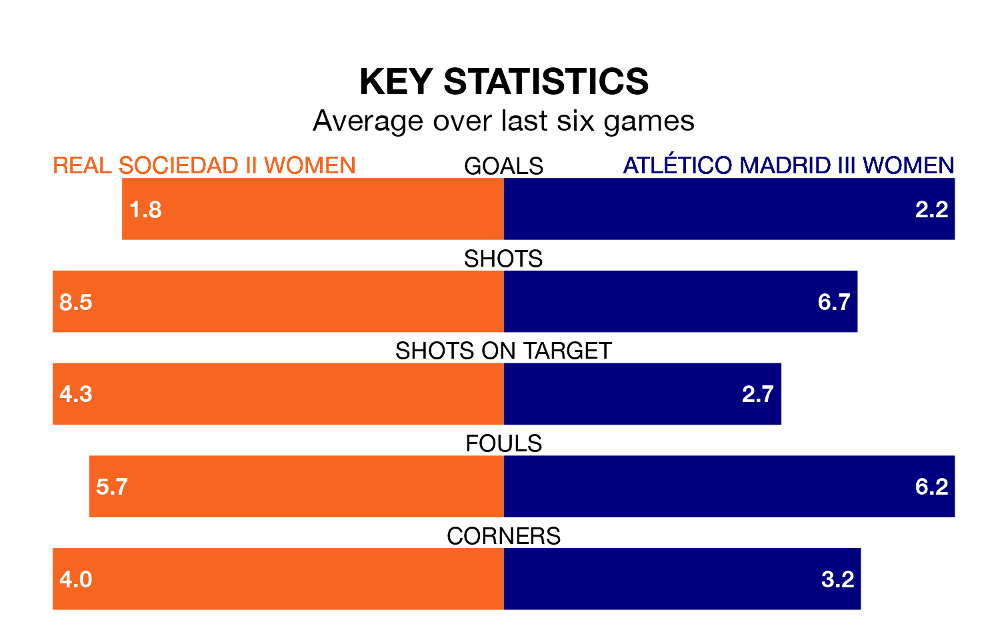

Real Sociedad II Women host Atlético Madrid III Women on early Sunday on the back of three consecutive wins in Segunda Federación Femenina.
Sociedad II Women have picked up 13 points from their last six games, and they face an Atlético Madrid III side who have also won their last two matches, and collected eight points from the last possible 18.
Atlético Madrid III are zero in the table after 15 games, of which they have won five and drawn five, earning 20 points.
Sociedad II Women are 11 places behind the away team in 11th, with six wins and five draws putting them on 23 points.
With 17 goals in 15 games so far this season, the hosts are the league's joint--4th-lowest scorers with 1.1 goals per game. But they are conceding fewer than average too, letting in 12 goals at a rate of 0.8 per game.
Atlético Madrid III, meanwhile, are average scorers, with 1.3 goals per game. They have also conceded 1.3 goals per game.
Sociedad II Women's last match was on Sunday, a 5-1 win against Racing Féminas, with getting the goals for Sociedad II Women.
Atlético Madrid III beat Rayo Vallecano Women 2-0 last time out, also on January 7, with on the scoresheet.
Updated: 15:34, 08/01/24